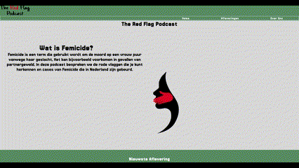

Mijn werk
Feed the pet game

Voor het vak Inleiding programmeren moesten we een spel programmeren met Javascript en opmaken met HTML en CSS
Link websiteSecond paw website

Voor het individuele project moesten we een duurzaam initiatief uit Amsterdam uizoeken, en een website maken voor dit initiatief
Link websitePodcast website
In het vak Content kregen we de opdracht om een podcast te ontwikkelen en hier passende content bij te maken. Vervolgens hebben we in het vak Internetstandaarden een website geprogrammeerd waarin we deze content hebben geïntegreerd.
Link websiteRecepten app project
Voor het groepsproject Heel Holland Kookt ontwikkelden we een app die kookliefhebbers tussen de 40 en 60 jaar ondersteunt bij het bereiden van recepten